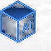

AI 项目档案
代表项目不是工具展示，而是 AI 落地样本
从业务问题、AI 介入、工程落地到验收复盘，展示 AI 应用产品化与交付路径。
企业级 RAG 知识资产平台
产品定义文档检索、知识问答、权限控制与溯源
02多 Agent 协作产品
技术方案PM Agent 调度、多 Agent 编排、任务拆解
03宠物店小程序
小程序会员、预约、商品、订单与门店经营
04Coze 视频优化工作流
多模态内容ASR、脚本理解、自动剪辑、质量评估
政企交付经历政企项目经验与交付成果